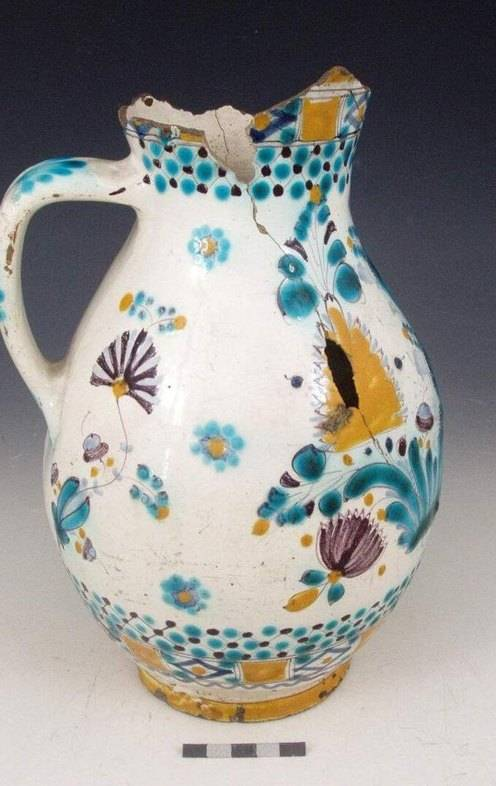
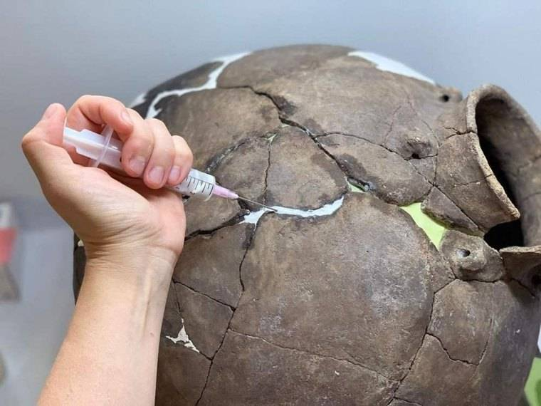
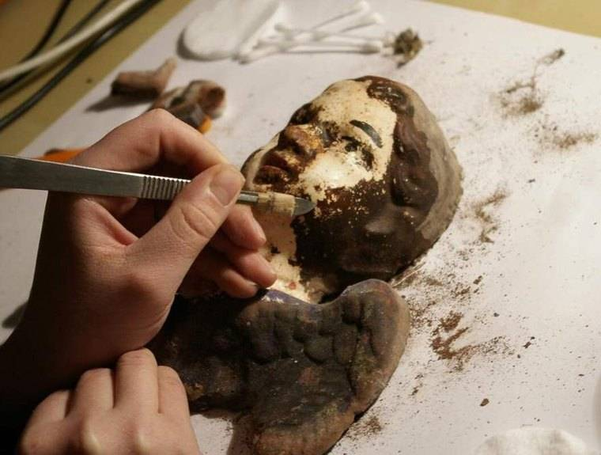
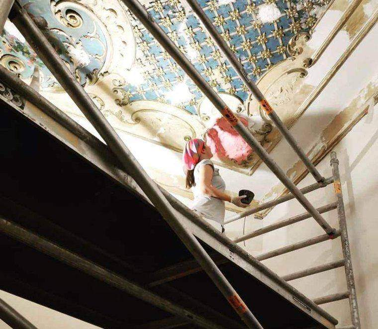

Fragmenta je odborná laboratoř specializovaná na konzervaci, restaurování a materiálový průzkum keramických artefaktů.
Věnuje se odbornému zpracování archeologických nálezů, etnografických a památkově chráněných předmětů z keramiky, terakoty a porcelánu — s využitím tradičních restaurátorských technik i současných vědeckých analytických metod.
restaurátorka keramických materiálů
Specializuje se na konzervaci a restaurování archeologických nálezů z keramiky a na metodiku rekonstrukce historické keramiky. Zkušenosti čerpá z mezioborových restaurátorských projektů, výstavních příprav a vlastní porcelánové tvorby.
Absolvovala praktický kurz tradiční japonské techniky kintsugi v Japonsku, který rozšířil její přístup k etice restaurování i k estetice vizuálních zásahů.


Nabídka odborných služeb
Hlavním zaměřením je dlouhodobé uchování a čitelná prezentace keramického kulturního dědictví v souladu s aktuálními etickými a metodickými standardy památkové péče a vědecké dokumentace.
Ukázky práce
Kontakt